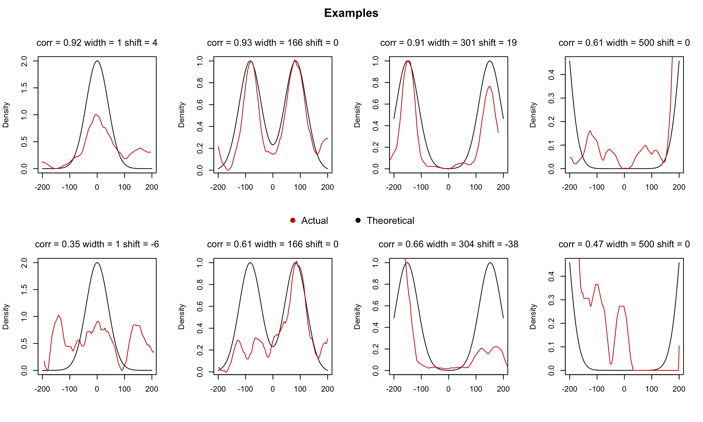
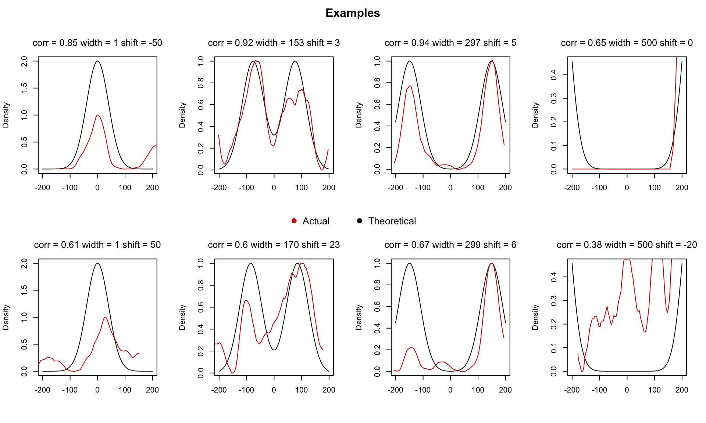
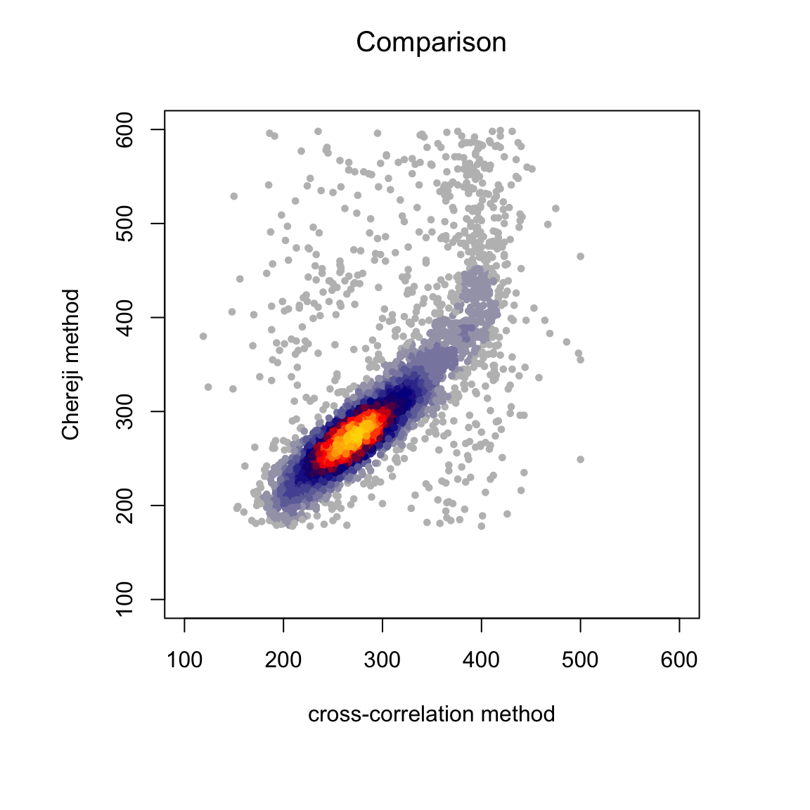
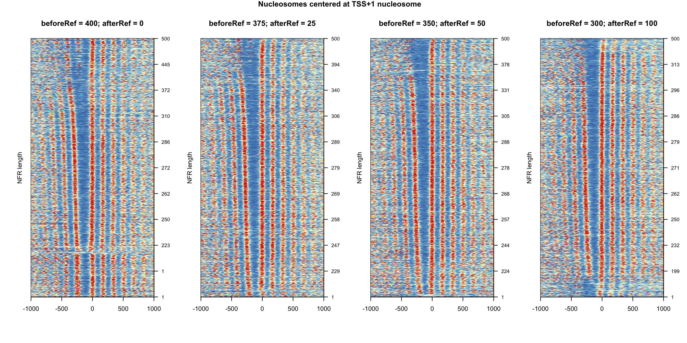
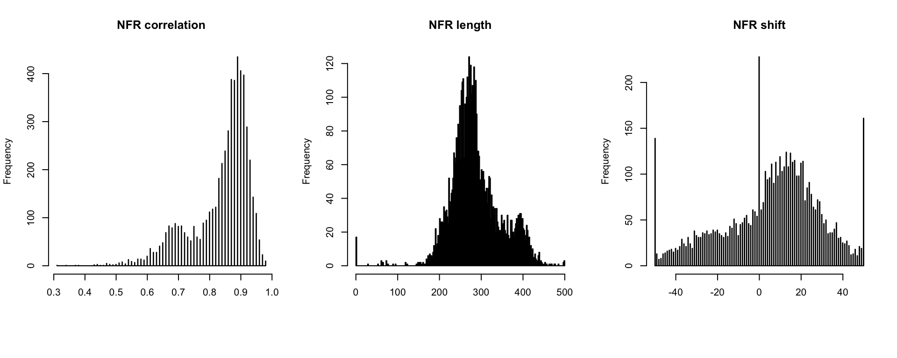
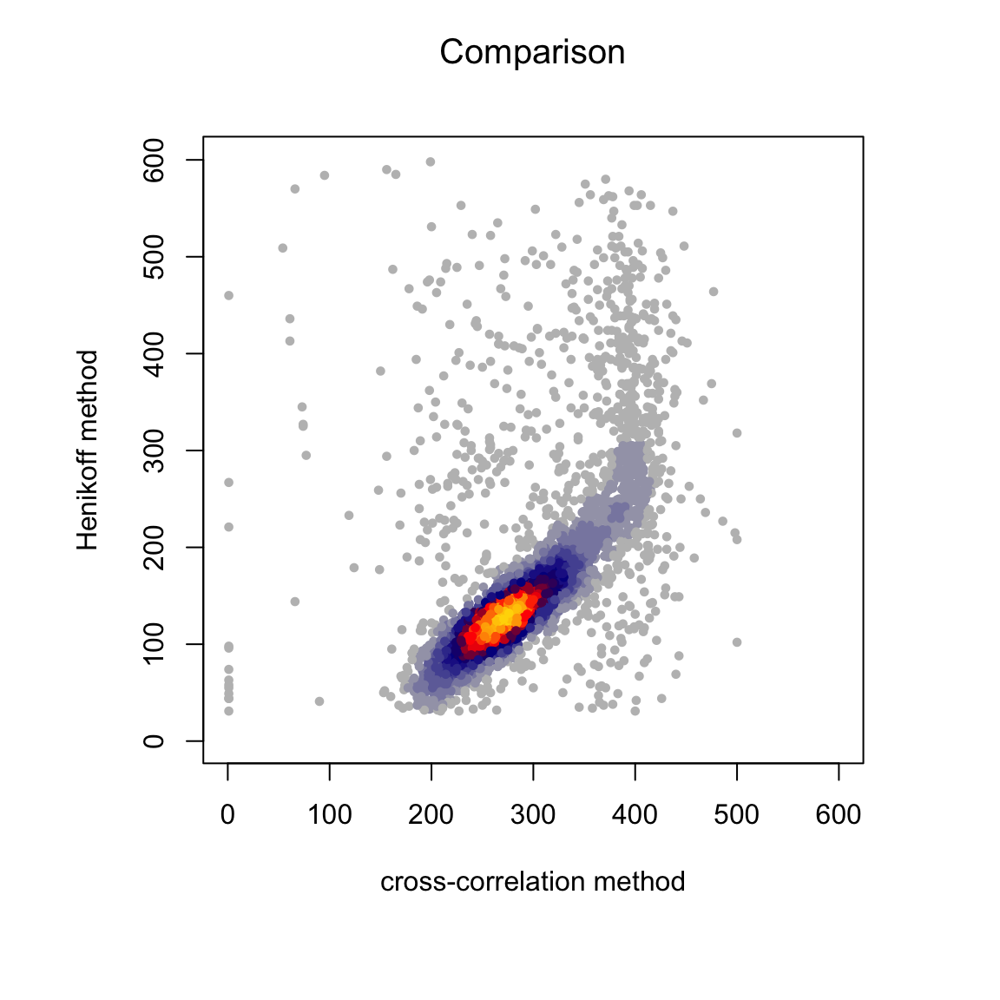
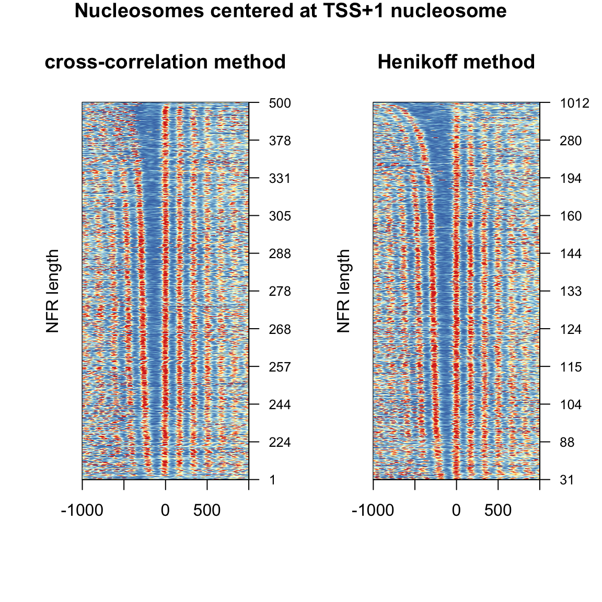

Determining NFR length by cross-correlation
Nucleosome Data by MNase-seq
- dyad coverages are centered at different kind of sites
- transcription factor (TF) motif (PWM) positions
- transcription start sites (TSS)
- TSS +1 nucleosome
- goal is to estimate the distance between flanking nucleomes surrounding the center
- this can be called NFR (nucleosome “free” region) length
Method Description
- the method is inspired by Ocampo et al. 2016 NAR
- 2 Gaussian distributions mimic 2 flanking nucleosomes with known distance between them (theoretical pattern)
- for each site, the nucleosome signal is compared to the theoretical pattern (by cross-correlation)
- the actual distance for the given site is selected by maximizing the cross-correlation
### helper functions ###
# generate Gaussian distribution
gaussmf <- function (x, sigma, mean) {
height <- 1
mfVals = (height * exp(-(((x - mean)^2)/(2 * (sigma^2)))))
mfVals
}
# create NFR-like pattern
makeNFR <- function(d, beforeRef, afterRef){
apply(sapply(c(-0.5,0.5), function(x) {gaussmf(seq(-beforeRef, afterRef), 40, x * d)}), 1, sum)
}
# scale between minimum and maximum
scaler <- function(x, probs = c(0.01,0.99)){
(x - quantile(x, probs[1])) / (quantile(x, probs[2])-quantile(x, probs[1]))
}
### main function ###
# iterate through each row of the matrix
# use ccf function to find maximum correlation
# pick d which corresponds to the maximum correlation
calcNFRlength <- function(my_mat,
beforeRef = 200,
afterRef = 200,
mc.cores = 16){
# here before and after is not necessarily symmetric (e.g. if matrix is not centered at NFR)
my_mat_sub <- my_mat[, (ceiling(ncol(my_mat)/2)-beforeRef):(ceiling(ncol(my_mat)/2)+afterRef-1)]
res <- parallel::mclapply(1:nrow(my_mat_sub), mc.cores = mc.cores, function(ridx){
rx <- scaler(my_mat_sub[ridx, ])
bestR <- 0
spacingV <- NA
shiftV <- NA
total_width <- beforeRef+afterRef
if(round(sd(rx), 3) != 0 & sum(is.na(rx)) == 0){
for (d in 1:(total_width+100)) {
# here before and after should be symmetric (left and right to center)
y <- makeNFR(d = d, beforeRef = total_width/2, afterRef = total_width/2)
my_ccf <- ccf(rx,y, lag.max = 50, plot=FALSE)
r <- max(my_ccf$acf)
shift <- my_ccf$lag[my_ccf$acf == r]
if (r > bestR) {
bestR <- r
shiftV <- shift
spacingV <- d
}
}
}
c(r = round(bestR, 2), space = spacingV, shift = shiftV)
})
df <- t(as.data.frame(res))
rownames(df) <- rownames(my_mat_sub)
return(df)
}Budding Yeast Data #1
- in vivo MNase-seq from yeast (S.cerevisae)
- centered at putative TF sites (based on PWM)
- single end data: all fragments are considered
# load site centered matrix
load("data_NFRlength/smooth.mat.TF.yeast.invivo.MNase.rda")
my_mat <- my_mat[1:100,]# use +/- 200 bp from the center
beforeRef <- 300
afterRef <- 300file_path <- "data_NFRlength/NFRlength.TF.yeast.invivo.MNase.txt"
if(file.exists(file_path)){
#read NFR data (pre-calcultaed)
df <- read.table(file_path, row.names = 1, header = T)
} else {
# run analysis
df <- calcNFRlength(my_mat = my_mat,
beforeRef = beforeRef,
afterRef = afterRef)
write.table(df, file = file_path, sep = "\t", row.names = T, col.names = NA)
}
head(df)## r space shift
## [1,] 0.81 415 50
## [2,] 0.62 457 0
## [3,] 0.66 216 -37
## [4,] 0.62 626 18
## [5,] 0.75 685 0
## [6,] 0.78 318 9- the greater the correlation the more similar is the actual pattern to the theoratical
- length indicates the NFR length
- shift indicates how far the signal had to be shifted from the center to get the max correlation
Heatmap Visualization
# heatmap ordered by NFR length
library(RColorBrewer)
par(mfrow=c(1,1), oma=c(2,0,0,1))
plotHeatmap(mat = my_mat, df = df, plot_title = "Nucleosomes centered at TF")
Exploring the Values
# check distributions
par(mfrow=c(1,3), oma=c(2,0,0,0))
hist(df[,1], breaks = 500, main = "NFR correlation", xlab="")
hist(df[,2], breaks = 250, main = "NFR length", xlab="")
hist(df[,3], breaks = 500, main = "NFR shift", xlab="")
Example Sites
# choose examples by interesting values
examples <- c(which(df[,2] > 0 & df[,2] <= 1 & df[,1] > 0.9)[1],
which(df[,2] > 165 & df[,2] <= 170 & df[,1] > 0.9)[1],
which(df[,2] > 295 & df[,2] <= 305 & df[,1] > 0.9)[1],
which(df[,2] > 499 & df[,2] <= 500 & df[,1] > 0.6)[1],
which(df[,2] > 0 & df[,2] <= 1 & df[,1] < 0.7)[1],
which(df[,2] > 165 & df[,2] <= 170 & df[,1] < 0.7)[1],
which(df[,2] > 295 & df[,2] <= 305 & df[,1] < 0.7)[1],
which(df[,2] > 499 & df[,2] <= 500 & df[,1] < 0.6)[1])
par(mfrow=c(2,4), oma=c(0,0,2,0))
plotExamples(examples = examples)
- length = 1 (no distance) means that a single nucleosome is sitting at the center
- length = 500 suggests a nucleosome is at one side only (not a real NFR?)
- lower correlation values might give a reasonable length although the pattern is more noisy
Budding Yeast Data #2a
- in vivo MNase-seq from yeast (S.cerevisae)
- centered at annotated TSS (transcription start site)
- paired end data: mono-nuclesomal fragments are selected
# load site centered matrix
load("data_NFRlength/smooth.mat.TSS.yeast.invivo.PE.MNase.rda")# the data is centered at TSS
# use asymmetric before and after (re-center to NFR)
beforeRef <- 300
afterRef <- 100file_path <- "data_NFRlength/NFRlength.TSS.yeast.invivo.PE.MNase.txt"
if(file.exists(file_path)){
#read NFR data (pre-calcultaed)
df <- read.table(file_path, row.names = 1, header = T)
} else {
# run analysis
df <- calcNFRlength(my_mat = my_mat,
beforeRef = beforeRef,
afterRef = afterRef)
write.table(df, file = file_path, sep = "\t", row.names = T, col.names = NA)
}Heatmap Visualization
# heatmap ordered by NFR length
library(RColorBrewer)
par(mfrow=c(1,1), oma=c(2,0,0,1))
plotHeatmap(mat = my_mat, df = df, plot_title = "Nucleosomes centered at TSS")Exploring the Values
# check distributions
par(mfrow=c(1,3), oma=c(2,0,0,0))
hist(df[,1], breaks = 500, main = "NFR correlation", xlab="")
hist(df[,2], breaks = 250, main = "NFR length", xlab="")
hist(df[,3], breaks = 500, main = "NFR shift", xlab="")
Example Sites
# choose examples by interesting values
examples <- c(which(df[,2] > 0 & df[,2] <= 1 & df[,1] > 0.9)[1],
which(df[,2] > 165 & df[,2] <= 170 & df[,1] > 0.9)[1],
which(df[,2] > 295 & df[,2] <= 305 & df[,1] > 0.9)[1],
which(df[,2] > 499 & df[,2] <= 500 & df[,1] > 0.9)[2],
which(df[,2] > 0 & df[,2] <= 1 & df[,1] < 0.7)[1],
which(df[,2] > 165 & df[,2] <= 170 & df[,1] < 0.7)[1],
which(df[,2] > 295 & df[,2] <= 305 & df[,1] < 0.7)[1],
which(df[,2] > 499 & df[,2] <= 500 & df[,1] < 0.6)[1])
par(mfrow=c(2,4), oma=c(0,0,2,0))
plotExamples(examples = examples)
- similar results as for TF aligned dataset
- some NFRs reach the 500 bp (should larger max distance be allowed?)
Budding Yeast Data #2b
- same data as above but aligned to the TSS +1 nucleosome (which was determined previously by Henikoff …ref)
- this creates a problem that the matrix is not cenetered at the NFR
- one has to carefully choose the left and right window
# load site centered matrix
load("data_NFRlength/smooth.mat.plusOne.yeast.invivo.MNase.rda")
# read NFR data (pre-calcultaed)
# beforeRef = 400; afterRef = 0
df1 <- read.table("data_NFRlength/NFRlength.plusOne.yeast.invivo.PE.MNase.set400_0.txt", row.names = 1, header = T)
# beforeRef = 375; afterRef = 25
df2 <- read.table("data_NFRlength/NFRlength.plusOne.yeast.invivo.PE.MNase.set375_25.txt", row.names = 1, header = T)
# beforeRef = 350; afterRef = 50
df3 <- read.table("data_NFRlength/NFRlength.plusOne.yeast.invivo.PE.MNase.set350_50.txt", row.names = 1, header = T)
# beforeRef = 300; afterRef = 100
df4 <- read.table("data_NFRlength/NFRlength.plusOne.yeast.invivo.PE.MNase.set300_100.txt", row.names = 1, header = T)file_paths <- c("data_NFRlength/NFRlength.plusOne.yeast.invivo.PE.MNase.set400_0.txt",
"data_NFRlength/NFRlength.plusOne.yeast.invivo.PE.MNase.set375_25.txt",
"data_NFRlength/NFRlength.plusOne.yeast.invivo.PE.MNase.set350_50.txt",
"data_NFRlength/NFRlength.plusOne.yeast.invivo.PE.MNase.set300_100.txt")
settings <- list(c(400,0),
c(375,25),
c(350,50),
c(300,100))
for(i in seq_along(file_paths)){
file_path <- file_paths[i]
if(file.exists(file_path)){
#read NFR data (pre-calcultaed)
df <- read.table(file_path, row.names = 1, header = T)
assign(paste0("df",i), df)
} else {
beforeRef <- settings[[i]][1]
afterRef <- settings[[i]][2]
# run analysis
df <- calcNFRlength(my_mat = my_mat,
beforeRef = beforeRef,
afterRef = afterRef)
write.table(df, file = file_path, sep = "\t", row.names = T, col.names = NA)
}
}Heatmap Visualization
# heatmap ordered by NFR length
library(RColorBrewer)
par(mfrow=c(1,4), oma=c(1,0,1,1))
plotHeatmap(mat = my_mat, df = df1, plot_title = "beforeRef = 400; afterRef = 0")
plotHeatmap(mat = my_mat, df = df2, plot_title = "beforeRef = 375; afterRef = 25")
plotHeatmap(mat = my_mat, df = df3, plot_title = "beforeRef = 350; afterRef = 50")
plotHeatmap(mat = my_mat, df = df4, plot_title = "beforeRef = 300; afterRef = 100")
title(main = "Nucleosomes centered at TSS+1 nucleosome", outer = TRUE)
- 3rd panel looks the most reasonable
Exploring the Values
# check distributions
par(mfrow=c(1,3), oma=c(2,0,0,0))
df <- df3
beforeRef = 350; afterRef = 50
hist(df[,1], breaks = 500, main = "NFR correlation", xlab="")
hist(df[,2], breaks = 250, main = "NFR length", xlab="")
hist(df[,3], breaks = 500, main = "NFR shift", xlab="")
Example Sites
# choose examples by interesting values
examples <- c(which(df[,2] > 0 & df[,2] <= 1 & df[,1] > 0.8)[1],
which(df[,2] > 150 & df[,2] <= 170 & df[,1] > 0.8)[1],
which(df[,2] > 295 & df[,2] <= 305 & df[,1] > 0.9)[1],
which(df[,2] > 499 & df[,2] <= 500 & df[,1] > 0.6)[2],
which(df[,2] > 0 & df[,2] <= 1 & df[,1] < 0.7)[1],
which(df[,2] > 165 & df[,2] <= 170 & df[,1] < 0.7)[1],
which(df[,2] > 295 & df[,2] <= 305 & df[,1] < 0.7)[1],
which(df[,2] > 499 & df[,2] <= 500 & df[,1] < 0.6)[1])
par(mfrow=c(2,4), oma=c(0,0,2,0))
plotExamples(examples = examples)Compare to Henikoff data
- reference …
- nucleomes positions are called first
NFR length is defined by the distance between -1 and +1 nucleosome
take the best settings from above (beforeRef = 350, afterRef = 50)
# read published data
NFR <- read.table("data_NFRlength/13059_2018_1398_MOESM2_ESM.txt", sep = "\t", header = T, stringsAsFactors = F)
df <- df3
# merge
df_NFR <- merge(df, NFR, by.x = "row.names", by.y = "ORF")
# plot
par(mfrow=c(1,1), oma=c(2,2,0,2))
library(LSD)
heatscatter(df_NFR$length, df_NFR$NDR.Width,
xlab = "cross-correlation method", ylab = "Henikoff method",
main = "Comparison", pch=19, cex=0.6,
xlim = c(0,600), ylim = c(1,600))
Heatmap Visualization
# heatmap ordered by NFR length
par(mfrow=c(1,2), oma=c(1,0,1,1))
my_mat <- my_mat[rownames(my_mat) %in% df_NFR$Row.names,]
my_mat <- my_mat[order(rownames(my_mat)),]
identical(df_NFR$Row.names, rownames(my_mat))## [1] FALSEdf <- df_NFR[,c(2,3,4)]
rownames(df) <- df_NFR$Row.names
plotHeatmap(mat = my_mat, df = df, plot_title = "cross-correlation method")
df <- df_NFR[,c(2,14,4)]
rownames(df) <- df_NFR$Row.names
plotHeatmap(mat = my_mat, df = df, plot_title = "Henikoff method")
title(main = "Nucleosomes centered at TSS+1 nucleosome", outer = TRUE)